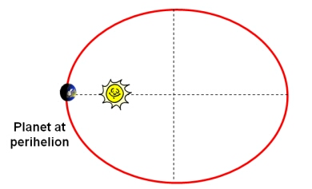
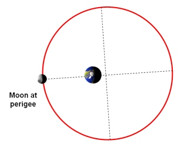

For an object moving in an elliptical orbit about another celestial body, the point of closest approach is called the periapsis (from the Greek peri = near). At this point in the orbit, the object is travelling at its greatest speed (Kepler’s Second Law).
The periapsis is equivalent to the:
- Perihelion: for a celestial body orbiting the Sun.
- Perigee: for a celestial body (in particular the Moon or artificial satellites) orbiting the Earth.
- Periastron: for a celestial body orbiting a star (e.g. in a binary star system).
The point of maximum distance in the orbit is called the apoapsis.
|

A planet at perihelion in its elliptical orbit around the Sun.
|

The Moon at perigee in its elliptical orbit around the Earth.
|